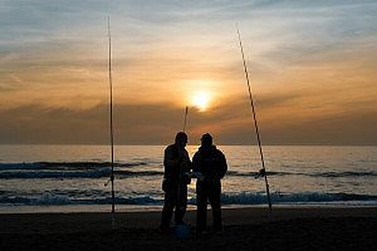

Pub & grill · pizza · fish and chips
Jolly Roger Fun Pub & Grub
Hibberdene

From Hibberdene's beach pubs and fish & chips to seafood, curry and pizza along the coast to Port Shepstone.
Hibberdene has a handful of pubs and takeaways; the choice widens fast a short drive south. Opening hours change, so phone ahead where there is a number. Hibberdene listings come from online directories and have no phone numbers yet.
Hibberdene
Hibberdene
Hibberdene
Hibberdene
Hibberdene
Hibberdene
Hibberdene
Hibberdene
Hibberdene
Hibberdene
Hibberdene
Hibberdene
Hibberdene
Hibberdene
Hibberdene
Hibberdene
Hibberdene
Hibberdene
Off Old Main Rd (R102), Sunwich Port
Toucan Rd, Banana Beach
Beach Rd, Sunwich Port
Station Rd, Sunwich Port
2 Toucan Rd, Melville
477 Milkwood Rd, Southport
10 Ocean Dr North, Southport
14 Gall St, Southport
3 Watsonia Rd, Southport
222 Casuarina Rd, Sea Park
32 Abelia Cres, Sea Park
Old Barn Centre, Palm Rd, Sea Park
Old Barn Centre, Palm Rd, Sea Park
Shop 1, Old Barn Centre, 156 Palm Rd, Sea Park
158 Palm Rd, Sea Park
158 Palm Rd, Sea Park
70 Casuarina Rd, Sea Park
158 Palm Rd, Sea Park
Tweni Spar Centre, Old Saint Faiths Rd, Umtentweni
Spar Centre, Abingdon Rd, Umtentweni
32 Commercial Rd, Umtentweni
1 2nd Ave, Umtentweni
5 Rethman Dr, Umtentweni
53 Ambleside Rd, Umtentweni
Cnr Links Rd & R102, Umtentweni
14 Commercial Rd, Umtentweni
Umtentweni main beach
2 Commercial Rd, Umtentweni
2 Commercial Rd, Umtentweni
1 Auben Rd, Umtentweni
Spillers Wharf, Old Sugar Mill Rd, Port Shepstone
Shop 8A, Spillers Wharf, 1494 Sugar Mill Rd, Port Shepstone
Listings from Google Maps and local directories, October 2026. Distances are approximate, from the lodge.
Live availability and instant confirmation online, or ask us anything on WhatsApp.